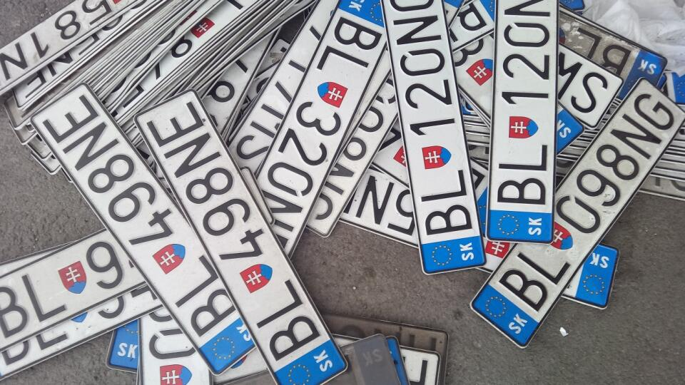
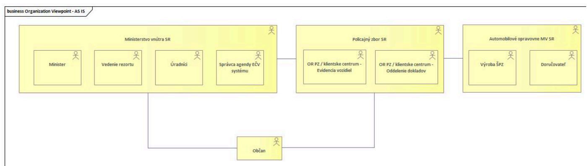
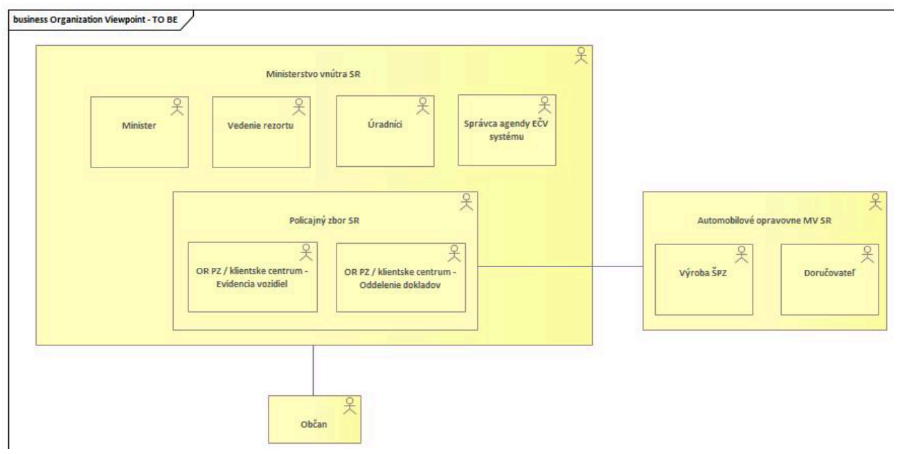
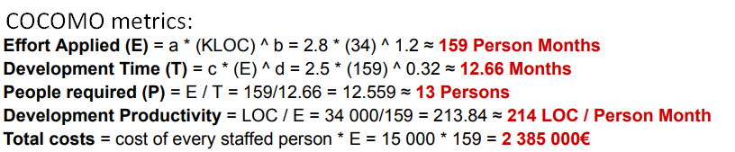

This project was developed as part of the AIS (Architecture of Information Systems) course during my Master's studies at FIIT STU. There were three of us working on this project - me and my classmates Martin and Lenka ♡.
The main goal of this project was to analyze and model both the AS-IS and TO-BE architecture of the vehicle license plate (EČV) management system in Slovakia, with a particular focus on the transition between the current and proposed states. Since a similar system already exists, our objective was not to design a completely new solution, but rather to identify its limitations and propose improvements that would increase efficiency, automation, and user convenience.
The resulting TO-BE architecture introduces a higher level of digitalization, reduces the need for manual administrative procedures, and enables better integration with external registries and services.
The project covered the full architecture lifecycle, from analyzing the current state to planning migration and estimating costs.
The figures show organizational viewpoints—the first represents the AS-IS state, and the second represents the TO-BE state.



This project gave me a solid understanding of enterprise architecture methodologies, specifically ArchiMate and TOGAF concepts. I learned how to think about systems not just as code, but as layered structures connecting business goals, applications, and infrastructure. The GAP and financial analyses pushed me to evaluate design decisions in a realistic, cost-aware way.